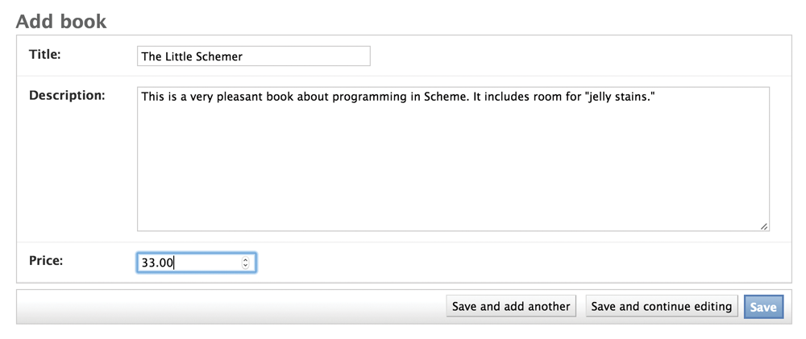

Frameworks make developing an app easier by using a specific outline and language. Although they are easier and more efficient, they are also constraining. Programmers can decide to use a framework depending on what they need. If it is convenient and not restricting what they want to do, they can decide to use a framework. One popular Web framework is Django, which is used for coding in Python.
Odds are, if you’re doing any kind of programming, especially Web programming, you’ve adopted a framework. Whereas an SDK is an expression of a corporate philosophy, a framework is more like a product pitch. Want to save time? Tired of writing the same old code? Curious about the next new thing? You use a graphics framework to build graphical applications, a Web framework to build Web applications, a network framework to build network servers. There are hundreds of frameworks out there; just about every language has one.
A popular Web framework is Django, which is used for coding in Python. Instagram was bootstrapped on it. When you sit down for the first time with Django, you run the command "startproject," and it makes a directory with some files and configuration inside. This is your project directory. Now you have access to libraries and services that add to and enhance the standard library.
I really like Django. It was written by kind people to help people in publishing. Ruby on Rails is probably the most famous Web framework, of course. It’s great, too!
Suppose we’re still making our bookstore, the Amazonesque one with the relational database that we started a few pages back. With Django, we run the "startproject" command. You might tell it to start an app called bookstore. Then you’d “set up your models,” meaning you’d start to define how your data looks, using Python’s idioms, which the framework will translate into database-ese.
from django.db import models
class Book(models.Model):
title = models.CharField(max_length=140)
description = models.TextField()
price = models.DecimalField(max_digits=6,decimal_places=2)
So now we can make a book catalog. (Obviously we need to add authors and the like.) The incredibly neat thing is that with a few more lines of configuration you have a completely functional, working Web-based article editor; to wit:
That’s called the “admin” view, and it’s always been a main feature of Django. Your work as a programmer has just started, but very soon after the moment of conception, your users—journalists, if you’re building a publishing platform, or alpha testers, or maybe just you, in a testing frame of mind—can start to play with your baby, entering books, trying things out.
Take a moment on that. You learn a programming language like Python. You need to make a website that allows a few dozen people to enter data at once. You write a few lines of Python code and set up accounts for people using the admin, and they can start to enter that data. If you do it a few times, you can get very good at this sort of work. You can get a team started on a project in a few hours.
Remember those issues about entering e-mail addresses? If you use Django, you can use "EmailField," and many of them are taken care of. Ditto many of the security concerns that arise when building websites, the typical abuses people perpetrate. You have entered into a pool with many thousands of other programmers who share the framework, use it, and suggest improvements; who write tutorials; who write plug-ins that can be used to accomplish tasks related to passwords, blogging, managing spam, providing calendars, accelerating the site, creating discussion forums, and integrating with other services. You can think in terms of architecture.
Magnificent! Wonderful! So what’s the downside? Well, frameworks lock you into a way of thinking. You can look at a website and, with a trained eye, go, “Oh, that’s a Ruby on Rails site.”
Frameworks have an obvious influence on the kind of work developers can do. Some people feel that frameworks make things too easy and that they become a crutch. It’s pretty easy to code yourself into a hole, to find yourself trying to force the framework to do something it doesn’t want to. Django, for example, isn’t the right tool for building a giant chat application, nor would you want to try competing with Google Docs using a Django backend. You pay a price in speed and control for all that convenience. The problem is really in knowing how much speed, control, and convenience you need.
Programmers talk about “premature optimization”—overthinking your code before you know what the real problems will be—and describe people who overthink programming as “architecture astronauts.” There’s another tendency, NIH (“not invented here”), that comes up a lot.
Frameworks can feel a little insulting, because they anticipate your problems and are used by thousands of people. They imply that yours are common, everyday problems, rather than special, amazing mysteries that require a true genius to solve.
The opinions of a framework are strong, but not as strong as an SDK. Those are tightly bundled, often commercial, and arrive with PR trumpets blasting, especially when they’re from Apple or Microsoft. Frameworks tend to be derived from frustration and on first release are bound with tape and thrust onto the Web with a blog post. From there they survive—or not. There are Web application frameworks for every major language; one Wikipedia listing
“Comparison of Web application frameworks,” which is a solid Wikipedia page. In fact, Wikipedia is an essential programming tool. The summaries of languages and approaches are typically well-vetted and full of code samples.
shows almost 40 different frameworks for Java alone and almost 30 for PHP.
Most of the good frameworks are free, released to solve problems and bring glory and influence to their creators, rather than great riches and control. They spread organically. People see a video tutorial showing them how to make a blog in a few minutes. Then they copy that work and say, “That was easy,” and show their friends. Websites go live, and programmers talk about how quickly they developed said websites.
If you’re building a Web app, you’d be a fool not to use a Web framework at first. There are tiny ones for control freaks, focused on URL routing, and massive ones like Django and Rails, which pursue the goals first outlined by large systems such as Smalltalk in days of yore: to enable the development of large, collaborative systems where data can be manipulated and shared. Take the work that’s been done for you. DRY (don’t repeat yourself).